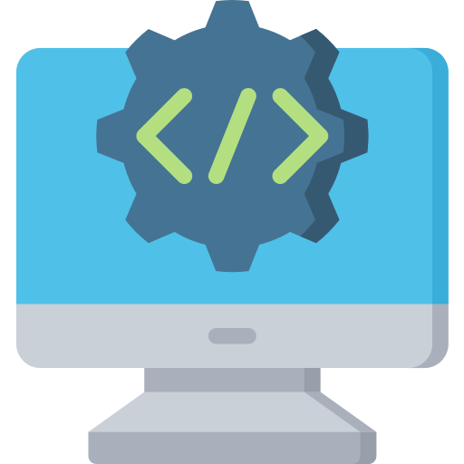

Desenvolvedor Web
Criar websites e aplicações web completas.

Segurança da Informação
Desenvolver e implementar medidas para proteger sistemas, redes e dados.

Arquiteto de Sistemas Web
Projetar a estrutura e a funcionalidade de aplicações online complexas.

Gestor de Projetos
Coordenar o planejamento, a execução e a entrega de projetos.
A graduação em Informática para Internet capacita profissionais na criação e implementação de soluções online, abrangendo desenvolvimento front-end, back-end e segurança da informação. O curso forma graduados aptos a projetar e otimizar plataformas digitais inovadoras, contribuindo para o crescimento do mundo online diante das demandas crescentes da sociedade digital.
Faça inscrição sua para o vestibulinho!
Acesse aqui